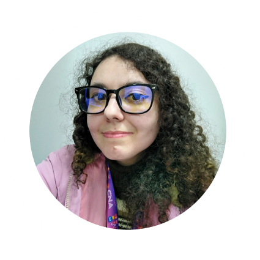

CAROLINE FRANCIELI TEIXEIRA.
Meu nome é Caroline, natural de Curitiba/Paraná. Atualmente estou morando na cidade de Almrante Tamandaré (Região Metropolitana de Curitiba). Sou professora de Inglês, porém estou migrando para a área da Tecnologia da Informação (TI), uma área que gosto muito. Tenho muito interesse em back-end, mas no futuro quero ser desenvolvedora full-stack.
Hobbies: ler, escutar música, jogos.
